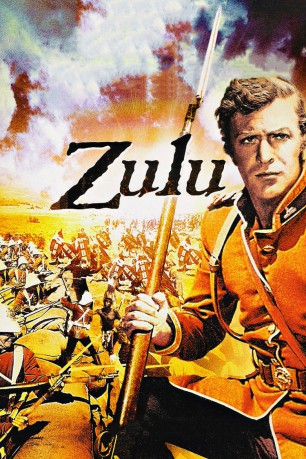

#3254 Zulu
 
 IMDB-Wertung: 7.8 / 10
IMDB-Wertung: 7.8 / 10  Metascore: 0
Metascore: 0 
Südafrika im Jahr 1879. Auf einer seiner Rundreisen entdeckt Missionar Otto Witt, wie der Stamm der Zulus kriegerische Vorbereitungen gegen eine britische Militärbasis trifft. Witt warnt den zuständigen Lieutenant, stößt bei ihm jedoch nur auf Unverständnis und Häme. Groß ist der Schrecken, als tatsächlich 4.000 schwerbewaffnete Zulu-Krieger gegen den Stützpunkt vorrücken.
Jahr: 1964
Dauer: 138 Minuten
FSK: 16
Land: England Studio: Paramount Home EntertainmentTonspuren:
Untertitel: Deutsch,
Auflösung: 720p (1280x544) Größe: 5591 MB
Genre: Drama, Krieg, Geschichte
Regisseur: Cy Endfield
Drehbuch: John Prebble, Cy Endfield, John Prebble
Soundtrack: John Barry
Darsteller:
- Stanley Baker als Lieutenant John Chard R. E.
 Jack Hawkins als Otto Witt
Jack Hawkins als Otto Witt- Ulla Jacobsson als Margareta Witt
 Michael Caine als Lt. Gonville Bromhead
Michael Caine als Lt. Gonville Bromhead Nigel Green als Colour - Sergeant Bourne
Nigel Green als Colour - Sergeant Bourne Richard Burton als Narration spoken by
Richard Burton als Narration spoken by- James Booth als Private Henry Hook
- Ivor Emmanuel als Private Owen
- Paul Daneman als Sergeant Maxfield
- Glynn Edwards als Corporal Allen
- Neil McCarthy als Private Thomas
- David Kernan als Private Hitch
- Gary Bond als Private Cole
- Peter Gill als Private 612 Williams
- Tom Gerrard als Lance / Corporal
 Patrick Magee als Surgeon Reynolds
Patrick Magee als Surgeon Reynolds Richard Davies als Private 593 Jones
Richard Davies als Private 593 Jones- Denys Graham als Private 716 Jones
- Dafydd Havard als Gunner Howarth
- Dickie Owen als Corporal Schiess
 Larry Taylor als Hughes
Larry Taylor als Hughes- Joe Powell als Sergeant Windridge
- John Sullivan als Stephenson
- Harvey Hall als Sick Man
- Gert van den Bergh als Adendorff
- Dennis Folbigge als Commissary Dalton
- Kerry Jordan als Company Cook
- Ronald Hill als Bugler
- Chief Mangosuthu Buthelezi als Cetewayo
- Daniel Tshabalala als Jacob
- Ephraim Mbhele als Red Garters
- Simon Sabela als Dance Leader
- Michael Bishop als Orderly , uncredited
Datei: X:\2-Dilogie(N-Z)\Zulu\Zulu (1964, FSK16, 1280x544).mkv seit 22.02.2016
Festplatte: HD Collection-2(A-Z)-3(A-M)
 Alle Filme aus Gruppe '2-Dilogie(N-Z)\Zulu'
Alle Filme aus Gruppe '2-Dilogie(N-Z)\Zulu'